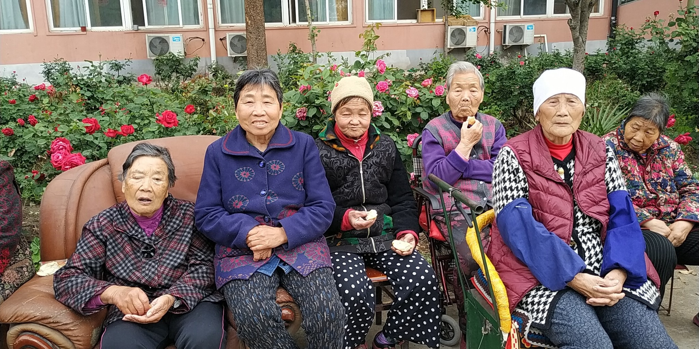

欢迎您访问！
加入收藏
设为首页
联系我们
简体版
繁体版
English
旧版
登录
注册
手机版
APP下载
微信
首页
全国两会
人员组成
部门设置
政策法规
重要文件
规章制度
神学思想建设
新闻动态
本会动态
海外交流
教会活动
时事关注
院校事工
各地教会
教堂风采
神学院校
各地两会
社会服务
社服新闻
项目事工
义工注册
天风在线
天风杂志
信仰教义
灵修语丝
讲章精选
大公信经
新教经典
异端辨析
教义简介
圣经APP
圣经下载
视频音像
新闻视频
讲道视频
活动专题
新闻列表

“周婆婆”爱心厨房项目简报（第二期）
2019-05-17
2018年，“周婆婆”爱心厨房项目共资助平顶山市新华区怡林老年公寓、内蒙古牙克石市免渡河耀华养老院、浙江省绍兴市上虞区谢崧大家庭福乐园及基督教余姚城堂老年服务中心的老人共计31名。
脑友同行：失智症特别照护
2019-03-30
由基督教全国两会主办、浙江省基督教两会承办的第十三期教会养老服务研讨会于3月24...
2018年宗教慈善周•“周婆婆”爱心餐计划在浙江余姚城堂老年服务中心启动
2018-09-17
2018年9月14日，由基督教全国两会发起的“2018宗教慈善周‘周婆婆’爱心餐计划”在浙江省余姚城堂老年服务中心成功举办。此次活动旨在弘扬尊老敬老的中华传统文化，通过与教会养老院合作，为有需要的老人提供营养丰富、搭配均衡的爱心餐。
这也是基督教——浙江省基督教养老事工（联谊）第五次研讨会正式开班
2018-06-19
2018年6月13日，在浦江爱心敬老院开业之际，浙江省基督教养老事工（联谊）第五次研讨会在浙江金华浦江爱心敬老院举办并正式开班。
基督教全国两会 “周婆婆”爱心餐计划全面启动！
2018-05-25
为了弘扬尊老敬老的中华传统文化，遵循耶稣基督“在白发人的面前,你要站起来；也要尊敬老人”的教导，基督教全国两会发起了“周婆婆”爱心餐计划，为教会养老院中的困难老人提供爱心营养餐补助。
内蒙古呼伦贝尔市基督教两会考察浙江省基督教养老服务机构
2018-03-29
2018年3月16日至24日，内蒙古呼伦贝尔市基督教两会组织了一支由6人组成的考察团参观了浙江省14所基督教养老服务机构。
“老友同行”健康养老综合服务示范项目顺利结束
2017-12-28
2017年，中国基督教三自爱国运动委员会的“老友同行”健康养老综合服务示范项目获得中央财政支持社会组织参与社会服务项目承接社会服务试点项目立项，立项资金为50万元。本项目以南平市圣爱老人护理院为依托，辐射护理院周边的几个社区，为身体失能和脑退化老人开展以身体康复、健脑益智、社交参与为目标的健康养老综合服务。
中国基督教两会组织跨宗教养老服务学习团赴美国考察访问
2017-10-31
2017年10月15日至25日，一支由基督教、天主教和佛教社会服务机构负责人组成的养老服务学习小组对美国宾夕法尼亚州现阶段的养老服务体系进行了为期十天的考察访问。
北京基督教两会举行“光盐行动—关顾空巢”主题活动授旗仪式
2017-09-28
2017年9月22日，北京市基督教两会“光盐行动—关顾空巢”主题活动授旗仪式暨崇文门堂“阳光守护工程”揭牌仪式在崇文门堂举办。市基督教两会领导班子成员、常委、教牧同工，社区及教会老人代表200余人参加活动。市、区各级领导应邀出席了本次活动。
上一页
1
2
下一页
阅读排行
1
坚持中国化方向， 弘扬爱国爱教传统， 办好新时代的中国教会
2
担负时代使命 书写教会故事
3
推进人才建设，办好神学教育
4
国家宗教事务局关于《宗教教职人员管理办法（征求意见稿）》公开征求意见的通知
5
服务信徒 关注阅读
6
本届海外联络事工委员会第二次会议在福建召开
7
基督教全国两会牧长看望慰问在京学习的第十五期爱国宗教人士研修班和第五届爱国宗教人士硕士研究生班基督教界学员
8
《基督教爱国主义教程》修订暨培训会议在华东神学院召开
灵修伴侣
每日灵修
每日灵修
圣经下载
在线下载圣经
圣经APP
下载圣经APP
圣经阅读
在线阅读圣经
天风APP

 手机版
手机版

 APP下载
APP下载
 微信
微信
 手机版
APP下载
微信
手机版
APP下载
微信